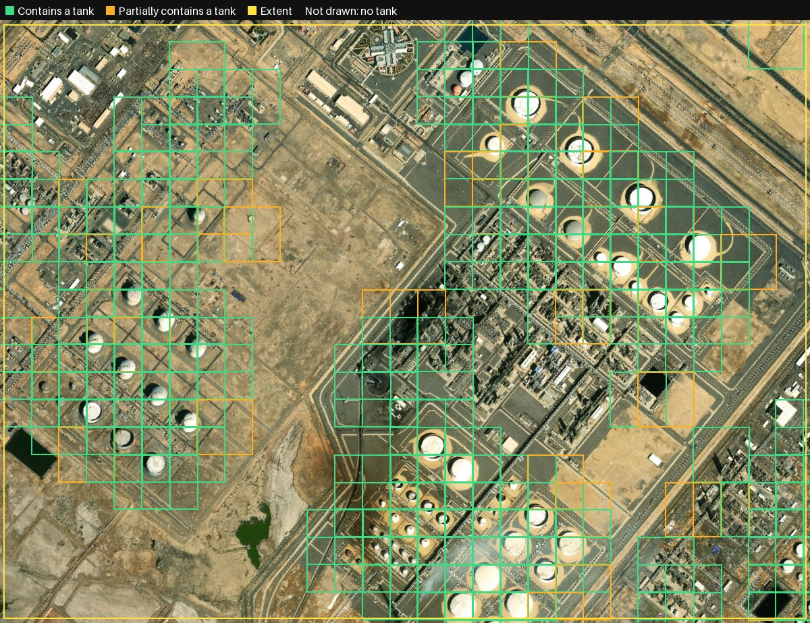
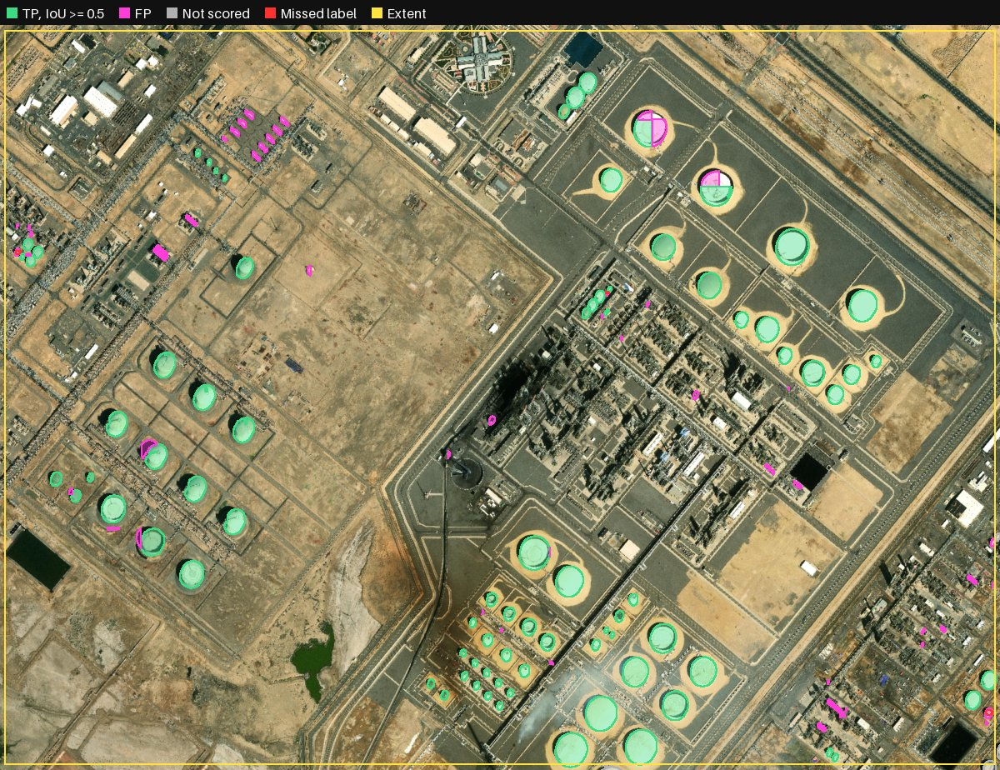
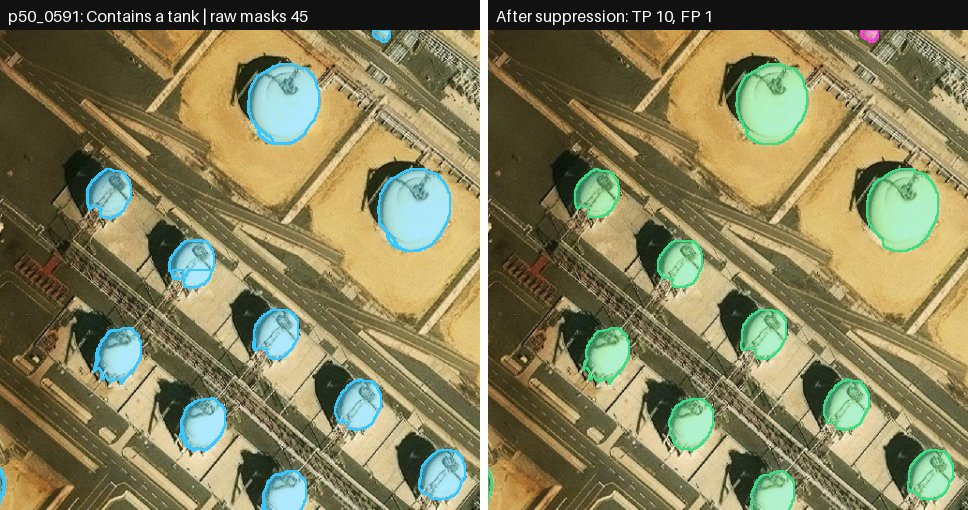
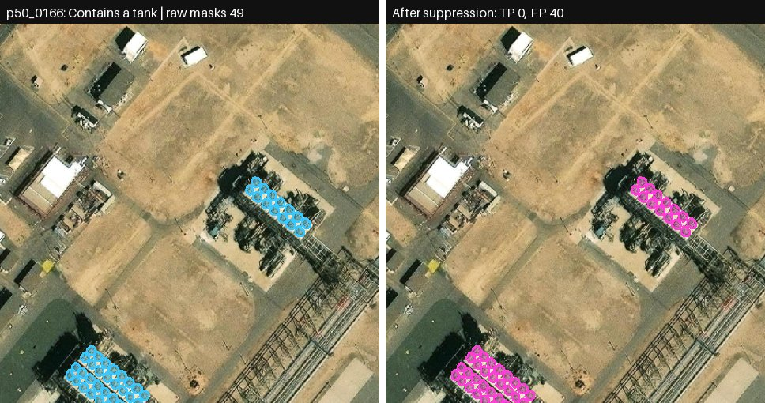
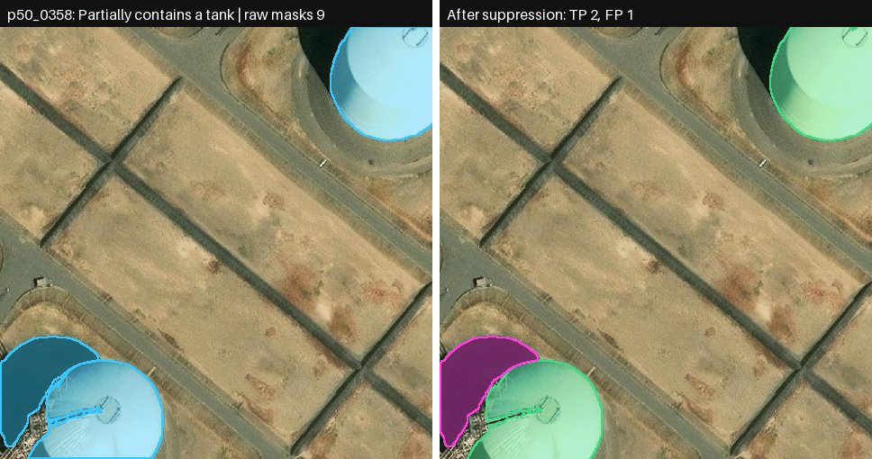
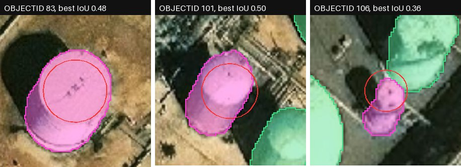

Storage tank detection in one aerial image with pretrained models and no task training
The name is a play on Where's Waldo? When you look for Waldo, you scan the page left to right, top to bottom, until you find the cell he's in. Only then do you zoom in and actually spot him.
Same idea here. What if I break the image into small cells and hand each one to a Jev-style model? It tells me whether the cell has something, nothing, or just part of something. If it's nothing, I don't waste time running SAM 3 on it. If it's something, the cell goes to SAM 3 (or any object detector) to do the real work.
That's the whole project: a little experiment to try that out. So far it looks good; the numbers are below.
This project finds storage tanks in one aerial image. It uses pretrained models only. It does not train a model for this task.
The method has two stages:
The project compares the detections with the labels in the Tanks layer. Each stage that uses a model runs on all GPUs of one host at the same time.
Results with the Qwen3-VL 32B gate (section 5 gives all values):
| Item | Value |
|---|---|
| Image | Tanks.tif: 8,200 × 6,087 pixels, 3 bands (RGB), 0.5 m pixel size, EPSG:3857 |
| Labels | Tanks layer in Tanks.gdb: 97 polygons |
| Extent | Extent layer in Tanks.gdb: 1 rectangle, 82% of the image |
| Labels inside the extent | 85 |
The project reads the image and the geodatabase. It does not change them. The models get bands 1, 2 and 3 only.
patch_decisions.py prepare divides the image into tiles of 512 × 512 pixels. The stride is 256 pixels, so adjacent tiles overlap by 50%. The image gives 736 tiles. One point on the ground is in a maximum of four tiles.patch_decisions.py gate sends the tiles with decision A or B to SAM 3. SAM 3 gets the text prompt “round storage tanks”. It gives a mask and a score for each object. detect.py uses a score threshold of 0.3. It converts each mask to a polygon. This polygon is a detection.merge_shards.py collects the detections from all tiles and sorts them. Detections that do not touch a tile edge come first, then detections with a higher score. The merge removes a detection when its intersection with a kept detection is more than half of the smaller area.evaluate.py uses only the labels and detections that have a centroid inside the extent. It matches each detection to a maximum of one label, in score order. A match needs an IoU of 0.5 or more. Areas use UTM zone 37N (EPSG:32637).to_gpkg.py writes the layers to one GeoPackage for ArcGIS Pro.Each model stage starts one model copy on each GPU. Each copy processes every n-th tile (rows[i::n]). The merge makes sure that each tile was processed exactly once.
Classify this RGB overhead satellite image patch for circular industrial storage tanks. A: Contains at least one complete storage tank whose full circular footprint is visible inside the patch. B: Contains part of one or more storage tanks cut off by a patch edge or gray missing-image area, but no complete tank. C: Contains no visible storage tank, either complete or partial. If both complete and partial tanks appear, choose A. There may be one tank or many. Partial means spatially cut off, not uncertain. Roads, factory roofs, ships, ponds, and bare ground are not storage tanks. Gray regions are missing image data. Judge visible evidence only. Answer with exactly one letter: A, B, or C.
| Role | Checkpoint | Revision | Host |
|---|---|---|---|
| Gate | Qwen/Qwen3-VL-4B-Instruct | ebb281ec | gc1 |
| Gate | Qwen/Qwen3-VL-32B-Instruct | 0cfaf481 | gc1 |
| Gate | nvidia/NVIDIA-Nemotron-Nano-12B-v2-VL-BF16 | ca9543b1 | gc5 |
| Gate | nvidia/Nemotron-3-Nano-Omni-30B-A3B-Reasoning-BF16 | e5e99324 | gc5 |
| Detection | facebook/sam3 (BF16, batch 32, mask threshold 0.5) | 3c879f39 | gc1 |
gc1 has four NVIDIA RTX PRO 6000 Blackwell GPUs. gc5 has two RTX PRO 6000 GPUs.
The project makes a reference value for each tile from the labels. A tile is “contains” when a label is fully inside the tile. A tile is “partial” when a label overlaps the tile and no label is fully inside. All other tiles are “none”. The project scores only the 513 tiles that are fully inside the extent: 89 contains, 93 partial and 331 none.
Presence counts contains and partial as positive. Presence values count tiles, not tanks.
| Model (512 px tiles) | Host, GPUs | 3-class agreement | Presence precision | Presence recall | Presence F1 | Wall time |
|---|---|---|---|---|---|---|
| Qwen3-VL 4B | gc1, 4 | 76.2% | 83.2% | 86.8% | 0.849 | 11.3 s |
| Qwen3-VL 32B | gc1, 4 | 77.6% | 81.0% | 91.2% | 0.858 | 31.2 s |
| Nemotron Nano VL 12B | gc5, 2 | 62.8% | 59.2% | 92.3% | 0.721 | 45.2 s |
| Nemotron Omni 30B-A3B | gc5, 2 | 73.5% | 69.9% | 94.5% | 0.804 | 47.2 s |
Wall time starts when the workers start and stops when the last worker stops. It includes the model load. The README gives the same table for 256 px and 384 px tiles.

All rows use the same SAM 3 settings. The first two rows use suppression as section 3 gives it. The last row uses the previous merge (box NMS at IoU 0.5) and is kept for comparison.
| Gate | Merge | Tiles to SAM 3 | Before → after merge | Scored | TP / FP / FN | Precision | Recall | F1 |
|---|---|---|---|---|---|---|---|---|
| Qwen3-VL 4B | Suppression | 246 | 800 → 248 | 220 | 81 / 139 / 4 | 36.8% | 95.3% | 53.1% |
| Qwen3-VL 32B | Suppression | 265 | 850 → 251 | 224 | 82 / 142 / 3 | 36.6% | 96.5% | 53.1% |
| Qwen3-VL 32B | Box NMS (old) | 265 | 850 → 364 | 327 | 81 / 246 / 4 | 24.8% | 95.3% | 39.3% |
TP, FP and FN use IoU 0.5. “Scored” is the number of detections with a centroid inside the extent.
| Time on gc1, 4 GPUs (seconds) | Qwen3-VL 4B gate | Qwen3-VL 32B gate |
|---|---|---|
| Gate decisions, 736 tiles, model load included | 11.3 | 31.2 |
| Gate folder: selection, CSV, GeoJSON and preview images | 1.2 | 1.2 |
| SAM 3 and merge, model load included | 12 | 15 |
| Total | ≈ 25 | ≈ 47 |
The SAM 3 time has a resolution of one second. The peak GPU memory of each SAM 3 copy is 19.0 GiB.

figures.py selects the example tiles with fixed rules. A person did not select them. Each figure shows one tile. Left: the detections from all tiles before suppression, in cyan. Right: the detections after suppression, with the colors of Figure 2. The numbers count detections with a centroid inside the tile.

p50_0591). Before suppression, 45 detections have a centroid in this tile, because neighbor tiles find the same tanks. After suppression, 11 remain: 10 true positives and 1 false positive.
p50_0166). SAM 3 detects 40 small round objects in rows. The Tanks layer has no labels for these objects, so they count as false positives. Nobody examined what these objects are.
p50_0358). Two tanks cross the tile edge. Both match a label. One false positive covers a dark area next to the tank at the bottom left.
NOTE: The results come from one image and one run for each configuration. They do not rank the models in general.
NOTE: Precision assumes that the Tanks layer has all tanks inside the extent. Figure 4 shows round objects without labels. If some of these objects are tanks, the true precision is higher.
NOTE: Suppression removes a detection that is inside a larger kept detection. A large false detection can remove a correct detection. No label lost its overlap in these runs.
NOTE: Qwen ran on gc1 with four GPUs. Nemotron ran on gc5 with two GPUs and a different runtime. Do not use these times as a controlled speed comparison.
NOTE: The project does not tune a prompt, threshold or weight on the labels.
Do these steps to repeat the Qwen3-VL 32B run. gc1 must have data/Tanks.tif, the checkpoints in checkpoints/ and the .venv environment (see the README). Each command stops if its output exists. Use a new output name for each run.
tmux new -s where-is-jev
cd ~/where-is-jev
bash run_tiles.sh qwen32b
.venv/bin/python patch_decisions.py gate --manifest results/tiles/512/manifest \ --shards results/tiles/512/qwen32b --out results/gate512_qwen32b
bash run_gc1.sh 32 results/sam3_qwen32b_512 results/gate512_qwen32b "round storage tanks"
results/sam3_qwen32b_512/COMPLETE exists.scp -r gc1:where-is-jev/results/gate512_qwen32b gc1:where-is-jev/results/sam3_qwen32b_512 results/
T=~/Documents/ArcGIS/Projects/Tanks
.venv/bin/python evaluate.py --gdb $T/Tanks.gdb --image $T/Tanks.tif \ --detections results/sam3_qwen32b_512/merged/detections.geojson --out results/sam3_qwen32b_validation
.venv/bin/python to_gpkg.py results/sam3_qwen32b_512/tank_detections.gpkg \ detections=results/sam3_qwen32b_512/merged/detections.geojson \ raw_detections=results/sam3_qwen32b_512/merged/raw_detections.geojson \ gate_tiles=results/gate512_qwen32b/patches.geojson \ evaluated_detections=results/sam3_qwen32b_validation/predictions.geojson \ evaluated_tanks=results/sam3_qwen32b_validation/ground_truth.geojson \ extent=results/sam3_qwen32b_validation/extent.geojson
.venv/bin/python figures.py --image $T/Tanks.tif --gate results/gate512_qwen32b \ --merged results/sam3_qwen32b_512/merged --validation results/sam3_qwen32b_validation --out results/figures
Each run gives one GeoPackage in EPSG:4326 with a spatial index on each layer. The files are in ~/Documents/ArcGIS/Projects/Tanks/:
tank_detections_sam3_round_qwen32b_512_ios.gpkg: Qwen3-VL 32B gate.tank_detections_sam3_round_qwen4b_512.gpkg: Qwen3-VL 4B gate.| Layer | Features (32B gate) | Content |
|---|---|---|
gate_tiles | 265 | Tiles sent to SAM 3, with decision and margin |
raw_detections | 850 | All detections before suppression |
detections | 251 | Detections after suppression, with score, patch and touches_patch_edge |
evaluated_detections | 224 | Scored detections, with status TP or FP and best_iou |
evaluated_tanks | 85 | Labels inside the extent, with status matched or FN |
extent | 1 | Evaluation boundary |
The README gives each field of each layer.
| File | Function |
|---|---|
patch_decisions.py | Makes tiles (prepare), collects decisions (export) and makes the gate folder (gate) |
decide_qwen.py, decide_nemotron.py | Make the A/B/C decision for each tile on one GPU |
detect.py | Runs SAM 3 on the tiles of one GPU |
merge_shards.py | Checks the tile coverage and removes duplicate detections |
evaluate.py | Matches detections to labels inside the extent |
validate_tiles.py | Scores tile decisions against reference values from the labels |
to_gpkg.py | Writes GeoJSON layers to one GeoPackage |
figures.py | Makes the figures in this document |
run_tiles.sh, run_gc1.sh | Start one worker for each GPU |
README.md is the experiment log. It gives all runs, values and limits.
| Term | Meaning in this document |
|---|---|
| Tile | A square of 512 × 512 image pixels. Adjacent tiles overlap by 50%. |
| Gate | The stage that selects the tiles for SAM 3 from the VLM decisions. |
| Decision | The VLM answer for one tile: A (contains a tank), B (contains part of a tank) or C (contains no tank). |
| Detection | One polygon that SAM 3 makes for one object. |
| Label | One polygon in the Tanks layer. |
| Extent | The polygon in the Extent layer. Only labels and detections with a centroid inside it are scored. |
| Suppression | The removal of duplicate detections after the merge of all tiles. |
| IoU | Intersection area divided by union area of two polygons. |
| TP, FP, FN | True positive: a detection with a matched label. False positive: a detection without a matched label. False negative: a label without a matched detection. |
| Presence | A tile value that is positive for contains and partial. |